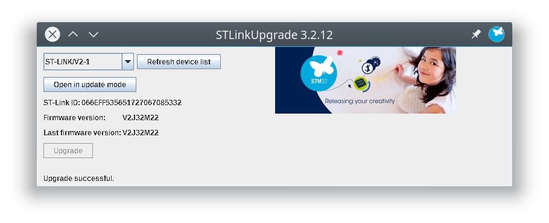

由於我們很久沒有使用這一片 STM32F746 Discovery 開發板，因此最好先更新一下他的 ST-LINK/V2 的驅動。
本文紀錄如何在 Linux 下更新 ST-LINK/V2 驅動的方式。
事前準備
首先你必須到 STMicroelectronics 網站去註冊一個帳號，我們需要登入這個帳號才能下載檔案。
接下來到 Discovery kit with STM32F746NG MCU 這邊，往下找到以下這個 STSW-LINK007 點擊進入下載頁面
接著一樣往下拉到最後，就會看 Get software 按鈕，點選下載
這樣下載會得到名為 en.stsw-link007.zip 的檔案。
解壓縮
我們先將 en.stsw-link007.zip 這檔案解壓縮
coldnew@gentoo ~ $ unzip en.stsw-link007.zip
會得到 stsw-link007 資料夾，裡面結構長這樣
coldnew@gentoo ~/stsw-link007 $ tree -L 3
. <b>
├── AllPlatforms <b>
│ ├── native <b>
│ │ ├── linux_x64 <b>
│ │ ├── linux_x86 <b>
│ │ ├── mac_x64 <b>
│ │ ├── win_x64 <b>
│ │ └── win_x86 <b>
│ ├── StlinkRulesFilesForLinux <b>
│ │ ├── 49-stlinkv2-1.rules
│ │ ├── 49-stlinkv2.rules
│ │ ├── 49-stlinkv3.rules
│ │ └── Readme.txt <g>
│ └── STLinkUpgrade.jar <r>
├── readme.txt <g>
└── Windows <b>
├── ST-LinkUpgrade.exe
└── STLinkUSBDriver.dll
9 directories, 8 files
根據你的平台不同，有可能需要裝些驅動，這邊我只以 Linux 平台舉例
安裝需要的套件
由於這份更新程式會用到 libusb-1.0 這個套件 ，根據你的平台不同會有不同的安裝方式，以下以 Debian/Ubuntu 為例:
coldnew@debian ~ $ sudo apt-get install libusb-1.0
Gentoo Linux 則是:
coldnew@gentoo ~ $ sudo emerge dev-libs/libusb
另外，由於這隻程式會依賴 jdk 這邊請依照各自平台安裝 jdk8 的方式來處理，不另外描述。
更新 udev rules
接下來我們需要更新 udev rules，讓 Linux 可以知道怎樣的 uid:pid 可以對應到 STM32 的產品，並針對這些設備設定權限讓非 root 使用者也可以使用。
將這些 *.rules 的檔案複製到你的 /etc/udev/rules.d 資料夾下
coldnew@gentoo ~/stsw-link007 $ sudo cp -rf AllPlatforms/StlinkRulesFilesForLinux/*.rules /etc/udev/rules.d/
接下來告訴 udevadm 有 rules 更新，要重新載入一下
coldnew@gentoo ~/stsw-link007 $ sudo udevadm control --reload-rules
這樣針對 Linux 的驅動部份就完成了~
更新 ST-LINK/V2
接下來，就讓我們執行這隻更新程式吧，首先把你的 STM32F746G-DISCO 接上 USB-STLINK 到電腦。
coldnew@gentoo ~/stsw-link007 $ java -jar AllPlatforms/STLinkUpgrade.jar
這樣執行程式的時候，應該就會找到它 (沒找到點選 Refresh device list )
點選 Open in update mode ，會看到你的板子的當前 ST-LINK/V2 的韌體版本號
點選 Upgrade 後，就開始更新啦
更新完成，我們可以準備開始玩這塊板子囉
